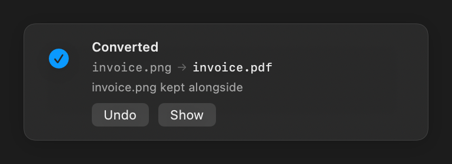

The ritual this deletes
You have a photo. You need a PDF. So you search “png to pdf”, pick one of the identical sites, and upload your file to a stranger's server.
- Search “png to pdf”
- Pick a site
- Upload your file
- Wait
- Close a popup
- Download the result
- Find it in Downloads
- Move it back
- Delete the original
- Rename the file
invoice.png → invoice.pdf
Nothing is uploaded. Nothing leaves your Mac. There is no window to open, no file picker, no “drag your file here”. You already know how to rename a file.
How to use it
- Click a file in Finder
- Press Return and edit the part after the dot
- Press Return again
A second later a notice confirms it, with Undo if you didn't mean it.

That is the whole app. It lives in your menu bar and does nothing else.
Some things worth trying
| Rename | And you get |
|---|---|
| screenshot.png → .txt | The text inside the image, read out of it |
| scan.pdf → .txt | The words from a scanned document that has no text layer |
| photo.heic → .jpg | An iPhone photo anything can open |
| report.docx → .pdf | A PDF you can send |
| deck.pages → .pdf | Exactly what Pages itself would export |
| clip.mov → .mp4 | The same video, in the container everything accepts |
| talk.mp4 → .m4a | Just the audio |
| brochure.pdf → .jpg | Every page as an image, delivered as a .zip |
Install it
Download the latest release, open the disk image, and drag Suffix to your Applications folder.
macOS will block it the first time
Suffix isn't signed with a paid Apple Developer certificate, so macOS will say it “cannot be verified”. That is Gatekeeper reacting to the missing $99-a-year signature, not to anything the app does.
- Open Suffix and let macOS block it
- Go to System Settings → Privacy & Security
- Scroll to the line about Suffix and click Open Anyway
You do this once.
Then let it reach your files
macOS protects Desktop, Documents and Downloads. Without access Suffix keeps running but silently does nothing in exactly the folders you use most, so setup asks for Full Disk Access and then offers a Test it button that converts a real file to prove the whole chain works.
Don't skip the test. A silent, healthy-looking failure is this app's characteristic way of going wrong, and the test is what catches it while you are still paying attention.
Would rather not trust a stranger's binary?
Reasonable. Build your own — it takes about ten seconds:
git clone https://github.com/PewPewBiches/Suffix.git
cd Suffix && ./Scripts/build-app.sh && open buildWhat it converts
Images and PDFs
| From | PNG | JPEG | TIFF | GIF | BMP | HEIC | TXT | |
|---|---|---|---|---|---|---|---|---|
| PNG · JPEG · TIFF · GIF · BMP · HEIC | ● | ● | ● | ● | ● | ● | ● | ● |
| WebP | ● | ● | ● | ● | ● | ● | ● | ● |
| ● | ● | ● | ● | ● | ● | – | ● |
Any image can become text: Suffix reads the words in it using the Vision framework built into macOS. A PDF becomes text the same way, falling back to reading the pages when the document is a scan.
A PDF of more than one page becomes a .zip of numbered
images, because one image cannot hold a hundred pages. Suffix asks
first, and names the result document.zip rather than the
document.jpg you typed.
Video and audio
| From | MOV | MP4 | M4V | M4A | WAV | AIFF | MP3 |
|---|---|---|---|---|---|---|---|
| MOV · MP4 · M4V | ● | ● | ● | ● | ● | ● | ○ |
| M4A · WAV · AIFF · MP3 | – | – | – | ● | ● | ● | ○ |
Video to video normally copies the existing streams instead of re-encoding, so it is fast and loses nothing. Video to audio extracts the soundtrack.
○ MP3 needs a helper. macOS ships an MP3 decoder but no
encoder, so Suffix uses ffmpeg or lame if one
is installed — brew install ffmpeg. It looks for an encoder
rather than bundling one. If you'd rather not, .m4a is the
native equivalent and needs nothing.
Documents
| From | To PDF |
|---|---|
| Pages · Keynote · Numbers | ● exact — needs that Apple app installed |
| Word · RTF · OpenDocument · HTML · plain text | ● approximate |
Read this before converting a document you plan to send. Only iWork files convert exactly, because Suffix asks Pages to export them. Everything else is re-laid-out by macOS's own text engine: text and basic formatting survive, but tables, columns, headers and footers, and exact pagination do not. Suffix says so on the notice — check the result.
Is this safe?
Your files never leave your Mac
Suffix contains no network code at all. Conversion uses only what ships with macOS — ImageIO, PDFKit, AVFoundation and Vision. There is no account, no service, and nothing to sign in to.
Nothing is destroyed
Before anything is overwritten the original is copied aside and kept for seven days, so any conversion can be undone from the menu bar. Stored originals are deleted automatically after a week, rather than quietly becoming a second copy of your photo library.
You choose whether the original stays
| After renaming photo.png to photo.pdf | |
|---|---|
| Replace the file | photo.pdf — one file, as renaming implies |
| Keep both | photo.pdf and photo.png, side by side |
It only acts on a deliberate rename
Not on files you copy, download or move — only when you change a file's
extension yourself, to something Suffix can actually produce, and the
contents don't already match. Archives, code, other apps' libraries and
anything it doesn't recognise are left exactly as they are. A
.zip renamed to .png is untouched, and your
Photos library is never opened.
How it works
Renaming a file in Finder only changes its name; the bytes are untouched. Suffix watches for rename events, checks whether the file's real format still matches its new extension, and re-encodes it when it doesn't.
Everything is decided from the file's contents, never its
name. A text file called notes.jpg is left alone. A PNG
called photo.jpg is converted.